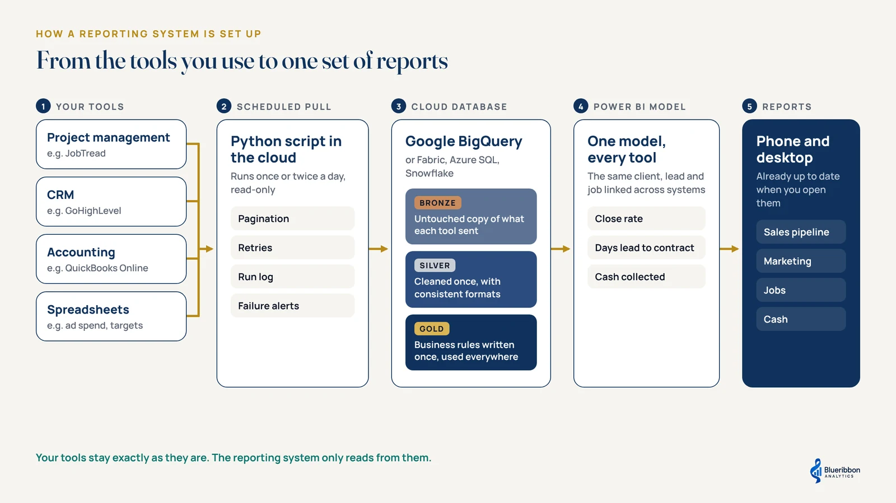
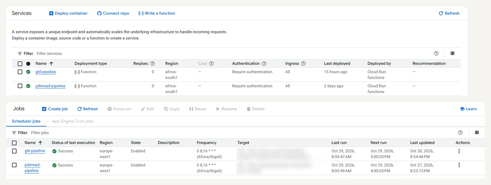
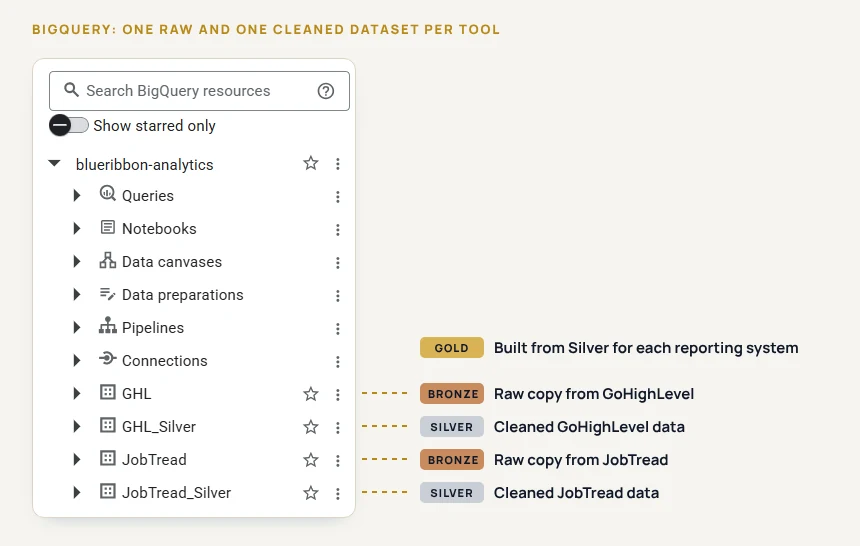
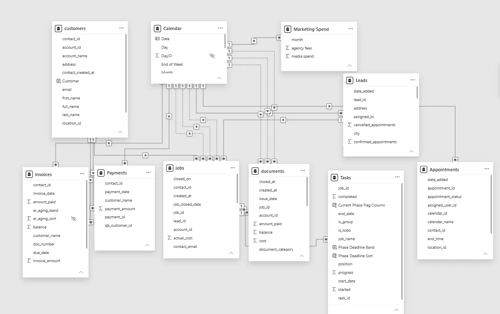
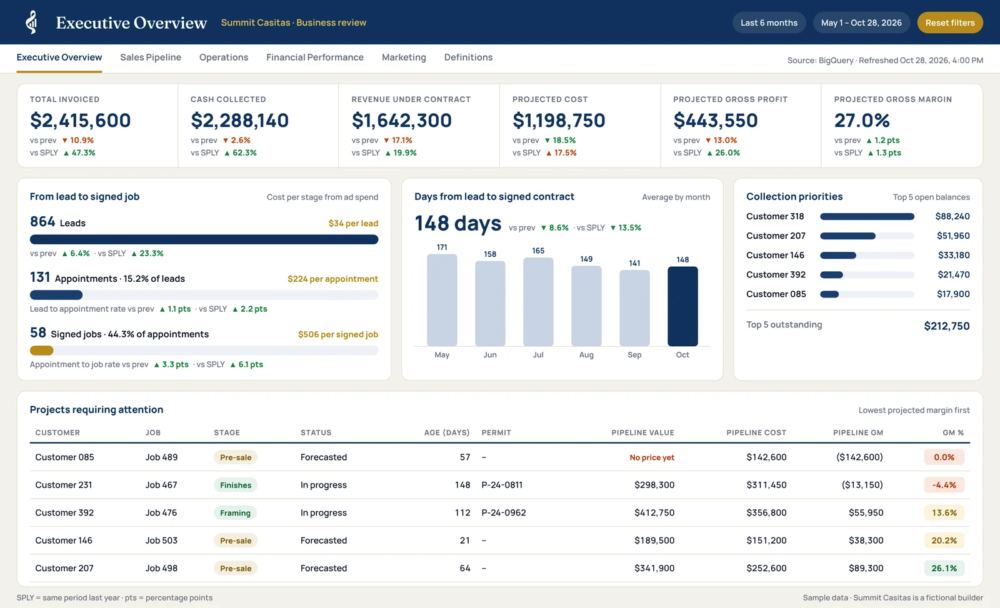
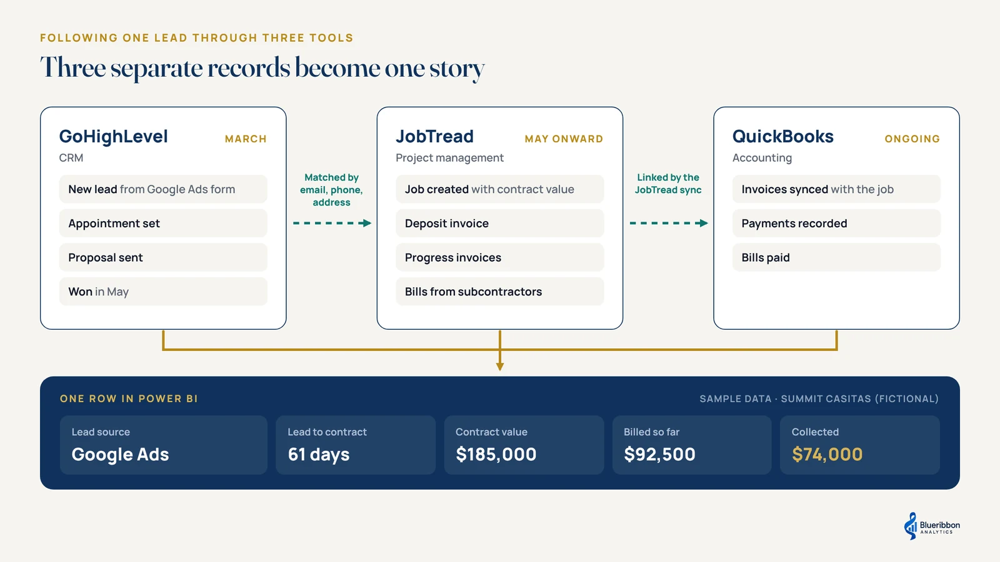

In our last article, Why Every Home Builder Needs a Reporting System, we covered why a growing building company needs one place that pulls the numbers from the tools it already uses and keeps them up to date on its own. The next question is how to set one up.
This guide walks through the process step by step. The examples come from a common setup for ADU, casita and custom home builders: JobTread for jobs, GoHighLevel for leads and QuickBooks Online for the books. If you use different tools, the process still applies, so keep reading so you can apply the same process.
The five parts of a reporting system
Every reporting system has the same five parts, whatever tools sit at the start.

- Your tools. These are where the work happens and where the data starts. They stay exactly as they are.
- A scheduled data pull. Code that collects the data from each tool automatically, usually at a defined frequency like daily, twice daily etc.
- A cloud database. Where the data from every tool is stored and prepared. There are several good options, including Google BigQuery, Microsoft Fabric, Azure SQL and Snowflake. This guide uses Google BigQuery, which suits the data volumes of most small builders.
- A Power BI model. The layer that joins everything together and holds the calculations.
- The reports. What the owner and the team actually open, on a laptop or a phone.
Nobody has to change how they work with the tools daily. The reporting system only reads from those tools.
Step 1: Start with the questions, then map the tools
Don’t start with the data. Start with the questions the business needs answered every week, such as:
- Which marketing source brings clients who actually sign?
- How many jobs are waiting on permits?
- How long does a lead take to become a signed contract?
- Are we collecting cash as fast as we bill it?
Then map each question to the tools that hold the answer, and check how each tool lets its data out. Most modern business tools offer an API, which is a secure way for another program to request data. Where there’s no API, scheduled exports or a Python script that collects the files can do the job instead.
This step shapes everything that follows. It’s also where gaps show up early, such as leads that never get a source recorded, or jobs created without a customer attached.
Step 2: Pull the data automatically
Next, write a script that requests the data from each tool on a schedule. Python is the usual choice. To keep it independent of anyone’s computer, run it in the cloud as a scheduled job, for example a Google Cloud Run function triggered by Cloud Scheduler.

A reliable data pull needs to handle a few things:
- Pagination. Tools hand data over in pages, so the script keeps asking until it has everything.
- Retries. Connections drop, so the script tries again before giving up.
- A run log. Every run is recorded, so you can see what was loaded and when.
- Failure alerts. If a run fails, an email goes out so it’s fixed before anyone sees a stale number.
Where a tool allows it, use read-only access. The reporting system never needs to change anything in the source tools.
Step 3: Store and prepare the data in layers
Inside the database, the data moves through a few layers (the common architecture is bronze, silver and gold layers) before it reaches Power BI. How they’re built is a technical detail, but it helps to know why they exist.
- Bronze: Keep an untouched copy of what each tool sent. If a number is ever questioned, you can trace it back to exactly what JobTread or QuickBooks said on that day.
- Silver: Clean the data once, in one place. Make names and formats consistent, remove test records, and translate custom fields into plain labels. Every report then uses the same cleaned version.
- Gold: Keep the business rules in one place. Write once what counts as a signed job, or when revenue gets counted, and use it everywhere. That’s what makes a number on one report match the same number on another.

This is also where privacy gets handled. CRM records hold personal details, so carry through only the fields the reports actually need.
Step 4: Build the Power BI model and reports
With clean data in BigQuery, build the Power BI model. This is where the tools finally meet: the same client, lead and job are linked across all three systems. The calculations live here too, such as close rate, days from lead to contract and cash collected.

Then build the report pages around the questions from step 1. Schedule the Power BI refresh to run after each data pull, so the reports are current when someone opens them.

Step 5: Check every number against the source
Before anyone relies on the reporting system, reconcile it against the tools it came from. For example:
- Total billed per job in Power BI should match the invoices in QuickBooks.
- Open opportunities should match what GoHighLevel shows.
- Active jobs should match the job list in JobTread.
Every mismatch gets explained or fixed. This step matters more than any chart, because a reporting system people doubt gets abandoned.
What this looks like with JobTread, GoHighLevel and QuickBooks
Here’s how those steps play out with three tools common in growing building companies, including what we’ve found makes each one tricky.
JobTread
What to pull: jobs, customers and locations, documents such as estimates, invoices and bills, cost items, and the custom fields builders use to track things like job status and build type.
What makes it tricky:
- JobTread doesn’t reliably record when a record was last changed. Each pull should therefore reload a recent window of data with some overlap, so nothing slips through.
- Volumes grow fast. A few hundred jobs can carry tens of thousands of cost lines, so requests have to be sized carefully or the tool rejects them.
- Job stages often live in custom fields, and every builder sets these up differently. Learning how the company uses them is part of step 1.
GoHighLevel
What to pull: contacts, opportunities, pipelines and stages, appointments and lead sources.
What makes it tricky:
- Every agency sets up pipelines and stages its own way, so no two builders’ GoHighLevel accounts look alike.
- Contact records hold personal data. Bring across only an approved list of fields and leave the rest in GoHighLevel.
- Lead source is only as useful as it is consistent. If many leads have no source, flag it in step 1 so it can be fixed going forward.
QuickBooks Online
What to pull: customers, invoices, payments and bills.
Connect it to JobTread first. To get the most out of QuickBooks, it should be integrated with JobTread. Invoices and bills created in JobTread then sync to QuickBooks with the job attached. Payments recorded in QuickBooks can be traced back to the JobTread job and document they belong to. Without that link, matching billing and payments to jobs becomes guesswork based on names.
What makes it tricky:
- QuickBooks access expires regularly and has to be renewed automatically in the background, or the data quietly stops updating.
- Anything entered directly in QuickBooks, outside the JobTread sync, won’t carry the job link. Those records need their own matching rules.
- Accounting dates and project dates tell different stories. An invoice date and the job phase it relates to don’t always line up, so decide which date answers which question.
Following one lead through all three tools
Here’s where it comes together, using a fictional builder, Summit Casitas.
- March, GoHighLevel. A homeowner clicks a Google Ads ad for backyard casitas and fills in the form. GoHighLevel records her as a contact with Google Ads as the source, and her opportunity moves through “appointment set” and “proposal sent.”
- May, JobTread. She signs. The project manager creates the job in JobTread with the contract value and the build type.
- The following months, JobTread and QuickBooks. Her deposit invoice and progress invoices are created in JobTread and sync to QuickBooks, where each payment is recorded against them.
On their own, those are three records in three tools. Two connections link them:
- JobTread to QuickBooks through the sync, so payments trace straight back to the job.
- GoHighLevel to JobTread through the details they share, such as email, phone and address, plus a small mapping table for the few that don’t match automatically.

Once they’re linked, it becomes one story: a Google Ads lead, 61 days from first contact to signed contract, and a contract value with the share collected so far. Across every lead and job, that answers questions that used to need three exports and an afternoon:
- What does a signed contract cost by marketing source?
- How long does it take a lead to become a contract?
- How much of what we’ve billed have we actually collected?
Using different tools? The process stays the same
The five steps don’t change with the tools. What changes is how the data comes out, and what makes each tool tricky.
| What the tool does | Example in this guide | The same process works with |
|---|---|---|
| Project management | JobTread | Other construction and project management tools |
| CRM | GoHighLevel | HubSpot, Salesforce and other CRMs |
| Accounting | QuickBooks Online | Xero and other accounting tools |
| Everything else | Google Sheets | Excel files, ad platforms, scheduling tools |
The one requirement is a way to get the data out, through an API, regular exports or a script that collects files.
Keeping it running
A reporting system needs looking after once it’s live. Tools update their APIs, someone adds a new custom field in JobTread, a QuickBooks connection needs renewing, or the business adds a new service line. Each of these can quietly break a number.
Build in failure alerts from the start, check the run log regularly, and re-run the step 5 checks whenever something in the source tools changes. That’s what keeps people trusting the numbers month after month.
Frequently asked questions
Why use a cloud database instead of connecting Power BI directly to each tool?
Tools like JobTread and GoHighLevel don’t come with ready-made Power BI connectors. While they do provide an API where Power Query can use to pull, this turn to be very slow, especially with high volumes of data. A cloud database keeps the full history and joins the tools in one place. Refreshes stay fast and don’t depend on a computer being switched on.
Which cloud database should a small builder use?
Any of the common options works. Google BigQuery is used in this guide because it handles small data volumes well and costs little at that size. Microsoft Fabric suits companies already deep in the Microsoft ecosystem.
What does it cost to run each month?
At a typical small builder’s data volumes, the cloud side usually costs very little, often within Google’s free usage limits. The main running cost is a Power BI licence for each person who views the reports.
How often should the data refresh?
Twice a day suits most builders. It can run more often if the business needs it.
Does it slow down JobTread, GoHighLevel or QuickBooks?
No. The data pulls are small, read-only requests, and they can be scheduled outside busy hours.
What happens when one of the tools changes?
The failure alerts from step 2 flag it. The script then needs updating, and the step 5 checks should be run again.
Need help with your reporting?
If you’d like help setting up a reporting system like this, send a note below with the tools you use and what you’re trying to see.